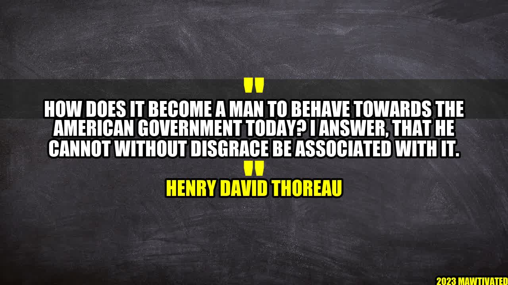

Disgraceful Behavior: How to Respond to the American Government Today

An Inspiring Story
When Amelia, a high school student, heard about the separation of families at the US border, she was heartbroken. So, she took action. She created a fundraiser to donate clothes and supplies to the children who were suffering. Her initiative gained so much support that she was able to make a difference in the lives of many.
The Author - Henry David Thoreau
Henry David Thoreau was a philosopher, essayist, and naturalist who is best known for his book, Walden. Thoreau believed that individuals have a moral duty to resist unjust laws. He spent a night in jail for refusing to pay a poll tax that supported slavery and the Mexican War.
Background
Henry David Thoreau's quote, "How does it become a man to behave towards the American government today? I answer, that he cannot without disgrace be associated with it," is as relevant today as it was in the 19th century. As citizens of a democracy, it is our responsibility to ensure that our government is working for the people and not against them. However, in recent years, we have seen corruption, injustice, and policies that harm marginalized communities. It is essential to understand how we can respond.
What Can We Do?
Educate ourselves - it is crucial to be informed about the issues and policies that affect us and others. We can read credible sources of news, follow organizations that advocate for human rights, and attend protests and town halls.
Take action - we can follow Amelia's example. We can donate to organizations that help those in need, we can volunteer, we can write to and call our representatives, and we can vote.
Be the change - we can strive to live by our values and set an example for others. We can practice empathy, kindness, and inclusivity in our daily lives.
Conclusion
We cannot ignore the state of our government and remain complacent.
We must stay informed, take action, and practice our values.
If we do not stand up for what is right, we are complicit in allowing injustice to continue.
Curated by Team Akash.Mittal.Blog
Share on Twitter Share on LinkedIn